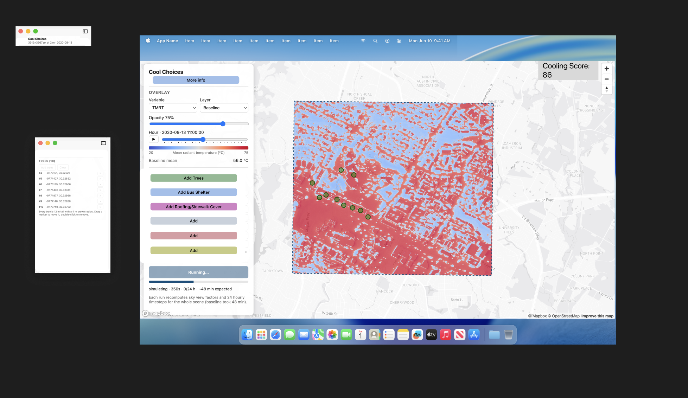

Week 8 · Oct 13 – Oct 19
From ideas to plans
You proposed four features; now think them through. A high-level plan is enough, but make it more concrete than your first bullet points: what exactly can the user do, what data does it need, and where does that data come from? Bring your answers and your Figma draft to the midterm on Oct 20.
Bring to the midterm presentation (Oct 20)
- Your Figma draft, developed further: where each feature lives on the screen, and what the user sees
- A strategy for each feature: your answers to the points in the table, at a high level, and whether you go ahead with it or cancel it
01 Your ideas
Your Figma draft is a good start: it keeps the prototype's layout and adds new interventions and a cooling score. Now each feature needs a plan. Here are some points I'd like you to think about.

| Your idea | Things to think about |
|---|---|
| Placement rules A precomputed no-go mask, so things can't be placed where they don't belong |
|
| Before/after view and Cooling Score Compare the changed map with the baseline, and turn the difference into a score |
|
| Other interventions Shading and shelters: placed like trees, with their own properties from research |
|
| Choosing the date Let the user pick the exact day |
|
Have another idea? Think it through the same way and bring it along. And if an idea turns out to be too hard (no data for Atlanta area that we want to implement, the model can't represent it, it takes too long to compute), cancel it and tell us why. Finding that out is a good result too.
02 My idea: a map of tiles
Here's one of mine, for the same exercise. I want to keep every analysis at 500 × 500 px (1 km × 1 km), so a run takes a few minutes instead of the 48 minutes the whole area takes. But the map should still cover the whole area. It's divided into tiles: the user clicks one, the map zooms in, and they plan interventions for that tile.
What it needs
- A grid over the whole area (Probably city of Atlanta area)
- A baseline for every tile, computed once, ahead of time.
- A tile index (an outline and an id for each tile) that the map draws. Clicking a tile zooms to it and loads its baseline.
- In the backend, each tile's rasters in their own folder, and every job says which tile it's for.
If anyone wants to take this on, go for it! You will be working on this with me. I need one student who will work with me to make several baseline rasters.